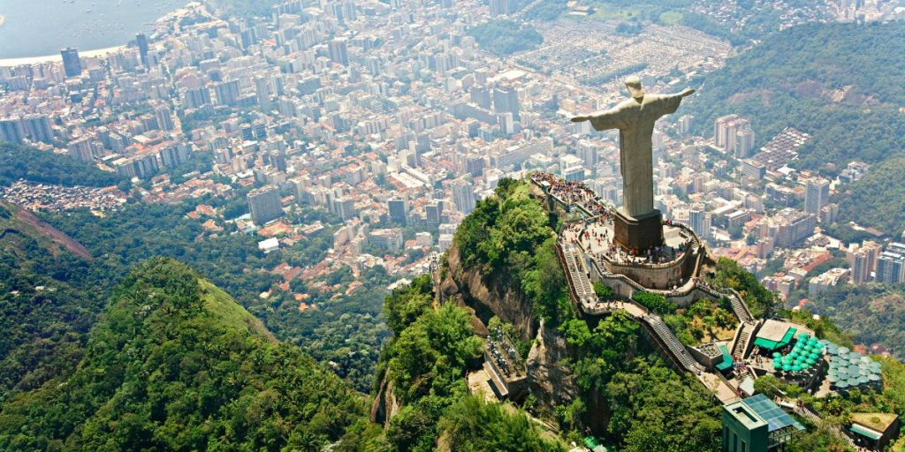

1- Chicago / EUA
Chicago é uma cidade onde sua família pode desfrutar de uma rica variedade de atrações. Desde passeios pelo icônico Millennium Park até visitas ao famoso Shedd Aquarium, Chicago oferece atividades para todas as idades, em um ambiente seguro e acolhedor.

2- Rio de Janeiro / Brasil
No Rio de Janeiro, a combinação de paisagens deslumbrantes e cultura vibrante cria um destino inesquecível. Com dias ensolarados nas praias de Copacabana e Ipanema e a natureza exuberante do Parque Nacional da Tijuca, a cidade oferece um cenário único. É o lugar perfeito para toda a família aproveitar atrações que vão do icônico Cristo Redentor a diversas experiências ao ar livre.

3- Lisboa / Portugal
Lisboa encanta com suas colinas pitorescas, ruas de paralelepípedos e uma rica história que se reflete em cada esquina. A cidade oferece vistas deslumbrantes do Rio Tejo, passeios por bairros tradicionais como Alfama e experiências culturais únicas. É um destino ideal para famílias, com atrações que vão desde os icônicos bondinhos até o moderno Oceanário, garantindo momentos memoráveis para todas as idades.